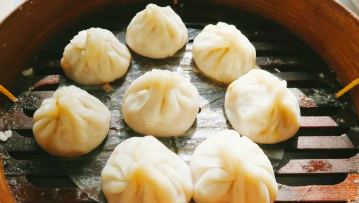

上海这个地方哦，精致、讲究、小资，又带点市井。
而这些特质，在上海本地的传统小吃身上，都能体现出来。 可能就是街头不起眼的店面内，藏着只有老上海们才知晓、才愿意为之排队的平民美食。
今天就跟大家盘点一下，摩登梦幻的魔都中，那些从未改变的地道街头味。
小笼馒头
小笼馒头，就是大家通常所说的小笼包——上海人管所有包子形状的食物都叫馒头，不管有没有馅。
小笼馒头诞生的传说有很多，大多又都跟南翔小笼有关，只不过真正的南翔小笼应该早已失传。 当然，美食嘛，可以不论过往，在变革中不断创新，反而可能比正宗的那一派更好吃呀。
① 富春小笼
富春小笼从不在乎卖相，只关乎美食的本质：好吃。
小笼的皮子可能很丑，肉馅却饱满鲜甜，一口咬开，幸福随着滚烫的汤汁流进嘴里，味蕾瞬间被激活，好吃到炸裂。
② 万寿斋
万寿斋的店面也是非常不起眼，有一次非饭点在山阴路遛弯，看到有一家破店门口竟排着小长队， 都是上海本地的叔叔阿姨，吃货的直觉告诉我，这家店准能好吃！

据说万寿斋的小笼，用的是最传统的制作方法。 个头小巧，肉馅偏甜、却完全不腻，一笼吃完你都不会过瘾的。这时候就推荐你再尝尝他家的馄饨，尤其是冷馄饨。
冷馄饨，是把荠菜大馄饨用花生酱拌着吃，这种吃法只在上海见过。 口感味道无比调和，芥菜的清香、花生酱的醇香、一点点醋香，加上冰凉的口感，盛夏之中吃到这一口，真是绝了。
生煎
① 东泰祥生煎馆
东泰祥的店面非常国营风，最招牌的便是生煎。而且这家店的半发酵生煎制作工艺，可是申请了非遗的哦。

吃起来跟普通生煎的口感有点点不同，皮薄底脆，馅料肥肉相间、不柴不腻。
② 大壶春
大壶春是老字号了，里面的师傅经验、手艺一流。为了保证生煎皮子的口感和质量，他们会根据天气来调整配方。
面皮松软，底部脆而不硬；肉馅紧实、汤汁不多不少。没有堕落的老字号，值得一试。
此外，店里的其他小吃也都不错呢，选择自己喜爱的，配合生煎服用，完美。
冷面
① 珊珊小笼
看店名也知道，这家店主打当然是小笼，不过因为冷面也绝顶好吃，便放在此处分享啦。
冷面上的花生酱炒鸡香滑，拌匀之前就恨不得先用舌头舔一口哦，浇头也是很舍得给，面软硬适中。 当它们配合在一起，取悦你就是这么容易。
② 大富贵
大富贵的冷面，是先蒸后汆，拌面所用的各位调料也是严格遵守比例，还会加入特别熬制的葱油。
口味上，油多、酱厚，偏好清淡的人可能会觉得有些重口，热爱高热量的吃货们则可以开心吃到嗨。
馄饨
上海的馄饨，主要有鲜肉小馄饨和菜肉大馄饨。
小馄饨讲究汤清馅细，皮是薄薄的碱水皮，肉馅微粉，清汤见底，漂着绿葱花、鲜黄蛋丝、紫菜、粉红虾皮，加勺猪油，香气袭人。
大馄饨，有冷热两种，冬天肯定吃热的，夏天就吃冷的嘛。大馄饨皮子挺括，包好后就像一个元宝。 纯肉馅的大馄饨有点吃不消，荠菜肉馅或三鲜馅才受欢迎。
① 盛心点心店
号称百年老店，店面极不起眼，东西却是真实的好吃。
大馄饨饱满笔挺，菜肉调和，菜解了肉的腻，肉救了菜的寡淡。
如何才能像上海人一样生活？先去寻常巷弄中，品一品这些街头美味再说吧。